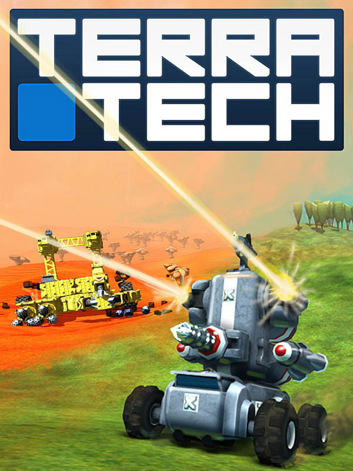

TerraTech
TerraTech
Details
|  | |
| Playtime | Not Played |
| Last Activity | Never |
| Added | 12/29/2024 11:36:27 |
| Modified | 4/11/2025 20:24:19 |
| Completion Status | Not Played |
| Library | Epic |
| Source | Epic |
| Platform | Epic Games |
| Release Date | 8/10/2018 |
| Community Score | 70 |
| Critic Score | 60 |
| User Score | |
| Genre | Action Indie |
| Developer | Payload Studios |
| Publisher | Payload Studios |
| Feature | Co-Operative Multiplayer Single-Player |
| Links | Steam Official Wikia GOG Twitch Epic |
| Tag | [GGDeals] Synced |
Description
TerraTech is an open-world, sandbox adventure game, where you design and build your own creations through a mix of crafting, combat and discovery. Design cars, tanks and planes from a huge library of blocks. Scavenge, craft and buy new parts in order to survive and become the ultimate planetary prospector.

Start your career as an Intergalactic prospector in search of profit and glory in Campaign, build to your heart's content in Creative mode or pit your Techs against the clock in the Gauntlet Challenge.

Team up with other intrepid prospectors in Co-op Campaign, build and create together in Co-op Creative, go head-to-head for glory in the Deathmatch Arena or battle for supremacy in Sumo.

Using the building blocks, guns, wheels, and wings from several Mining Corporations, you can build varied Techs to suit every purpose. Be it powerful armoured combat vehicles, unstoppable resource gathering machines, sprawling resource processing bases or a hybrid of all three - creativity is your key to exo-planetary success.

The worlds in TerraTech are procedurally generated and infinite, so there are always new lands to discover and more resources to find. Treacherous mountain ranges, luscious grasslands and huge deserts are among the biomes you will encounter. More will be added as development progresses.

The intergalactic mining industry is a profitable one, but you are not the only miner in search for new worlds to exploit. Defending yourself from rival miners will take time, resources and skill, with success leading to new territory and new lands. All equipable blocks and items can be damaged or destroyed, so ensuring you are sufficiently armed and ready for battle is a key element of both survival and prosperity in TerraTech. Get out there and show them who’s boss!

By gathering and processing natural resources, players are able to construct storage, refining and construction bases in order to craft new blocks in the game. Like the look of that Venture Hail Fire Rifle that just tore your vehicle apart? Go prospecting for the needed resources, and craft a couple for yourself in the shiny new Venture fabricator which you just acquired, by beating their time trial challenge in the nearby mountains.

All exo-planetary prospectors buy parts from the established Mining Corporations, where each have their own specific brand of mining technology. Get the job done with GSO, strip-mine to the max with the heavy-duty GeoCorp, zoom around with high-performance recon specialists Venture, function with military efficiency utilising the stealth focused Hawkeye, gain technological superiority with Enviro-giants Better Future or experiment with the bizarre weaponry of Reticule Research. Completing missions and discovering blocks for each Corp will improve your standing with them, and gain access to the more sought-after components in their arsenal.
Please check the System Requirements to ensure your PC is compatible.
Start your career as an Intergalactic prospector in search of profit and glory in Campaign, build to your heart's content in Creative mode or pit your Techs against the clock in the Gauntlet Challenge.
Team up with other intrepid prospectors in Co-op Campaign, build and create together in Co-op Creative, go head-to-head for glory in the Deathmatch Arena or battle for supremacy in Sumo.
Using the building blocks, guns, wheels, and wings from several Mining Corporations, you can build varied Techs to suit every purpose. Be it powerful armoured combat vehicles, unstoppable resource gathering machines, sprawling resource processing bases or a hybrid of all three - creativity is your key to exo-planetary success.
The worlds in TerraTech are procedurally generated and infinite, so there are always new lands to discover and more resources to find. Treacherous mountain ranges, luscious grasslands and huge deserts are among the biomes you will encounter. More will be added as development progresses.
The intergalactic mining industry is a profitable one, but you are not the only miner in search for new worlds to exploit. Defending yourself from rival miners will take time, resources and skill, with success leading to new territory and new lands. All equipable blocks and items can be damaged or destroyed, so ensuring you are sufficiently armed and ready for battle is a key element of both survival and prosperity in TerraTech. Get out there and show them who’s boss!
By gathering and processing natural resources, players are able to construct storage, refining and construction bases in order to craft new blocks in the game. Like the look of that Venture Hail Fire Rifle that just tore your vehicle apart? Go prospecting for the needed resources, and craft a couple for yourself in the shiny new Venture fabricator which you just acquired, by beating their time trial challenge in the nearby mountains.
All exo-planetary prospectors buy parts from the established Mining Corporations, where each have their own specific brand of mining technology. Get the job done with GSO, strip-mine to the max with the heavy-duty GeoCorp, zoom around with high-performance recon specialists Venture, function with military efficiency utilising the stealth focused Hawkeye, gain technological superiority with Enviro-giants Better Future or experiment with the bizarre weaponry of Reticule Research. Completing missions and discovering blocks for each Corp will improve your standing with them, and gain access to the more sought-after components in their arsenal.
Please check the System Requirements to ensure your PC is compatible.